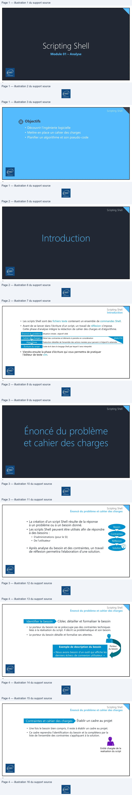
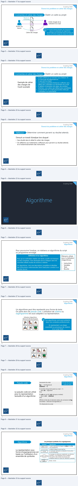
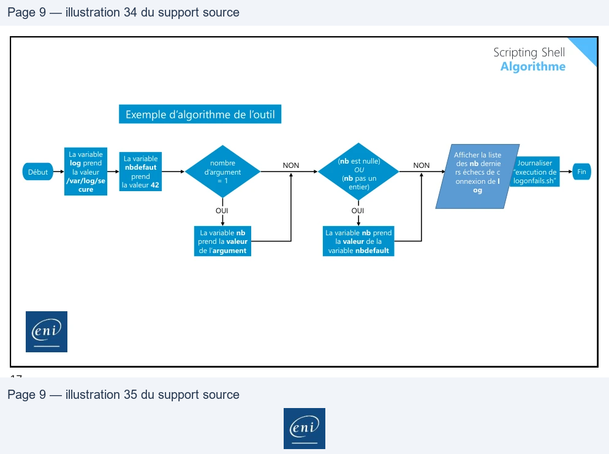

Transcription du document du Drive TSSR. La mise en forme est adaptée au Web ; les compléments IA du portail sont présentés séparément.
Module 01 – Analyse
1
Scripting Shell
Objectifs
• Découvrir l’ingénierie logicielle
• Mettre en place un cahier des charges
• Planifier un algorithme et son pseudo-code
2
Scripting Shell
3
Scripting Shell
Introduction
• Les scripts Shell sont des fichiers texte contenant un ensemble de commandes Shell.
• Avant de se lancer dans l’écriture d’un script, un travail de réflexion s’impose.
Cette phase d’analyse intègre la rédaction de cahier des charges et d’algorithme.
Situation initiale ; objectif ciblé
Énoncé du problème
Détail des contraintes et éléments à prendre en considération
Cahier des charges
ANALYSE
Traduction détaillée de l’ensemble des actions menées pour parvenir à l’objectif à atteindre
Algorithme
Code écrit dans le langage Shell par lequel il sera interprété
Écriture du script
• Viendra ensuite la phase d’écriture qui vous permettra de pratiquer
l’éditeur de texte vim.
4
A
| Cahier des charges | Détaildes contrainteset élémentsà prendre enconsidération ANALYSE Traductiondétailléede l’ensembledes actions menéespour parvenirà l’objectifà atteindre |
| Algorithme |
Scripting Shell
5
Scripting Shell
Énoncé du problème et cahier des charges
Besoin
• La création d’un script Shell résulte de la réponse
à un problème ou à un besoin donné.
• Les scripts Shell peuvent être utilisés afin de répondre
à des besoins :
Contraintes
• D’administrations (pour le SI)
• De l’utilisateur
Réflexion
Solution
• Après analyse du besoin et des contraintes, un travail
de réflexion permettra l’elaboration d’une solution.
6
=
Y
Scripting Shell
Énoncé du problème et cahier des charges
Cibler, détailler et formaliser le besoin
Identifier le besoin
• Le porteur du besoin ne se préoccupe pas des contraintes techniques
liées à la réalisation du script. Il décrit sa problématique et son besoin.
• Le porteur du besoin détaille et formalise ses attentes.
Exemple de description du besoin
Porteur
du besoin
« Nous avons besoin d’un outil qui affiche les
derniers échecs de connexion utilisateur. »
7
Scripting Shell
Énoncé du problème et cahier des charges
Contraintes et cahier des charges
Établir un cadre au projet
• Une fois le besoin bien compris, il reste à établir un cadre au projet.
• Ce cadre reprendra l’identification du besoin et la complètera par la
liste de l’ensemble des contraintes s’appliquant à la solution.
Entité chargée de la
realisation du script
8
D
BD
Fa

Scripting Shell
Énoncé du problème et cahier des charges
Contraintes et cahier des charges
Établir un cadre au projet
Besoin et
contraintes
Entité chargée de la
realisation du script
+
Porteur du
besoin
Sur toute la phase d’analyse, de l’expression du
Cahier des charges
besoin à la réalisation de l’algorithme,
les échanges sont essentiels entre le porteur du
besoin et l’entité chargée de réaliser la solution.
9
Scripting Shell
Énoncé du problème et cahier des charges
Contraintes et cahier des charges
Établir un cadre au projet
Exemple de cahier
des charges de
l’outil souhaité
•
Il sera utilisé sur un serveur sous Debian 10
•
Il n’aura pas de dépendances
•
Il sera écrit en Bash
•
Le nombre souhaité d’échec(s) à afficher sera
défini par l’utilisateur au lancement du script
•
À défaut d’indication de valeur de nombre
d’échecs, une valeur par défaut sera considérée
•
Le lancement du script pourra être initié par
l’utilisateur ou automatisé
10
Pg
Be.
à
5
à
—<_
D
Scripting Shell
Énoncé du problème et cahier des charges
Réflexion
Déterminer comment parvenir au résultat attendu
S’ensuit un travail d’analyse lors duquel :
• Sera étudié dans le détail le cahier des charges
• On réfléchira aux traitements à effectuer pour parvenir au résultat attendu
et à l’ordonnnancement des instructions
11
Scripting Shell
12
>
N
End
Scripting Shell
Algorithme
Pour poursuivre l’analyse, on réalisera un algorithme du script
ou programme envisagé.
Définition d’un algorithme
Éléments utilisés
pour la réalisation
d’algorithmes
Pour qu’un ordinateur réalise une tâche, qu’elle soit basique
ou très complexe, il est nécessaire de lui indiquer dans les
moindres détails toutes les actions à réaliser.
•
Instructions
•
Variables
•
Tests
•
Boucles
Un algorithme, c’est une description complète et détaillee
des instructions ordonnancées dont l’exécution conduit à un
résultat donné.
13
Scripting Shell
Algorithme
Un algorithme peut être représenté sous forme de texte.
On parle alors de pseudo code. L’utilisation de schéma ou
organigramme est aussi adaptée à sa representation.
Utilisation d’algorithme
dans la vie de tous les jours
Les algorithmes sont aussi présents
dans nos contextes professionnels.
Ils représentent une étape
essentielle au processus de création
d’un script Shell.
14
|
Scripting Shell
Algorithme
Lancement du script
Exemple de pseudo
code de l’outil
Pseudo code
log ←/var/log/secure
nbdefaut ←42
Si (nombre d’argument passé au script = 1)
alors nb ←argument
Finsi
Si ((nb est nul) OU (nb n’est pas un entier))
Le pseudo code est utilisé
pour la representation
textuelle d’un algorithme.
alors la nb ←nbdefaut
Finsi
Afficher la liste des nb derniers échecs de connexion de log
Journaliser « exécution de logonfails.sh »
Fin d’exécution du script
15
Scripting Shell
Algorithme
Les principaux symboles d’un organigramme
Algorithme
Symbole
Signification
DÉBUT / FIN
L’ovale matérialise les étapes du début et de fin
d’un programme.
ACTION
La flèche indique le sens des flux.
Le rectangle représente la réalisation d’une action
ou d’un processus.
DÉCISION
La représentation sous
forme d’organigrammes est
basée sur l’utilisation d’un
ensemble de symboles.
Le losange est utilisé pour représenter une décision
à prendre ; ou la vérification d’une condition.
Il est parfois utile d’utiliser des formes plus
complexes quand on a plus de 3 décisions à prendre.
ENTRÉE /
Entrée / Sortie
SORTIE
16
FC
f
.
fC
ED
ee
es |ST
2271
| Symbole | Signification |
| DÉBUT / FIN | L’ovalematérialiseles étapesdu débutet de fin d’un programme. |
| La flècheindiquele sensdes flux. | |
| ACTION | Le rectangle représentela réalisationd’uneaction oud’un processus. |
| DÉCISION | Le losangeest utilisépour représenterunedécision à prendre ; oula vérificationd’unecondition. Il estparfoisutile d’utiliserdes formesplus complexes quandon a plus de 3 décisionsà prendre. |
| ENTRÉE / SORTIE | Entrée / Sortie |

Scripting Shell
Algorithme
Exemple d’algorithme de l’outil
La variable
Afficher la liste
La variable
log prend
NON
NON
(nb est nulle)
nbdefaut
Fin
Début
nombre
d’argument
OU
(nb pas un
la valeur
/var/log/se
= 1
Journaliser
“execution de
logonfails.sh”
des nb dernie
rs échecs de c
onnexion de l
prend
la valeur 42
entier)
cure
og
OUI
OUI
La variable nb prend
La variable nb
prend la valeur
de l’argument
la valeur de la
variable nbdefault
17
2e
